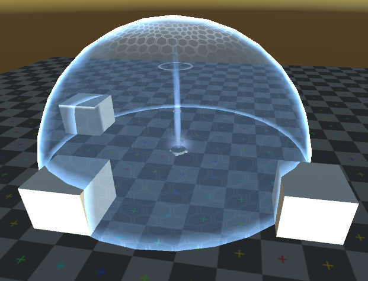

This page contains some of the small projects that I have developed while learning about shader language.
Winston's Barrier Projector
The barrier is a transparent shader. It uses a depth buffer to determine where the shield intersects with other objects by comparing the value in the depth buffer to the position of the geometry being rendered.
Using this intersection knowledge, a rim light can be rendered around the edge of the barrier.
It uses a hexagonal pattern that is brightened strip along the y axis and a couple of particle systems for creating the beam in the center.
One area of improvement for this shader is creating a model with uvs that wrap more nicely around the top and bottom of the sphere.
Some distortion can still be seen around the top since my sphere did not have a high density of vertices.

Wind Waker's Shoreline
This set of shaders was built to mimic the shoreline seen in The Legend of Zelda: The Wind Waker.
The model is composed of three section, one for the outer waves, one for the inner waves, and one for the damp sand underneath.
The biggest hiccup that I had while developing these shaders was the geometry layout.
Based on research on the original game, I found that each layer (damp sand, then inner waves, then outer waves) is actually slightly higher than the previous to avoid issues with the z-buffer.
Dissolve Shader
This is a simple dissolve shader that uses the model's local coordinates to generate an animated dissolve with perlin noise.
 JEFF BAUER
JEFF BAUER